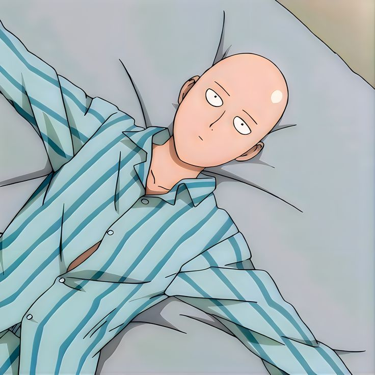
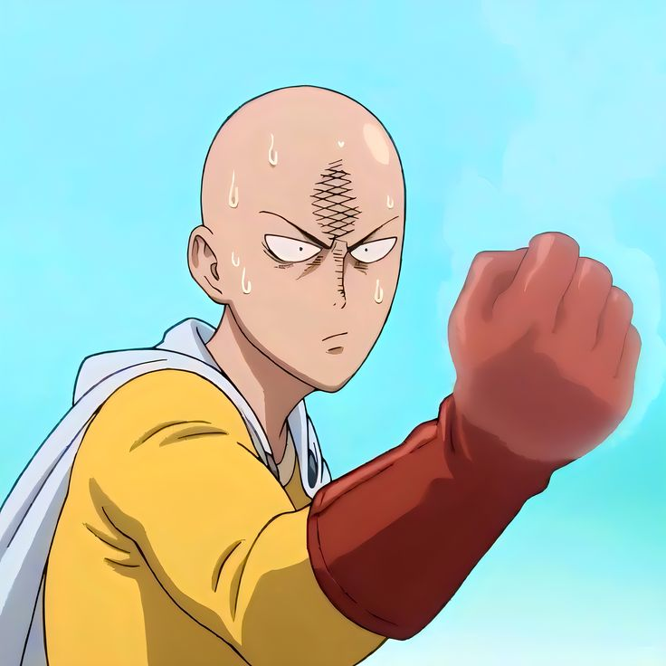
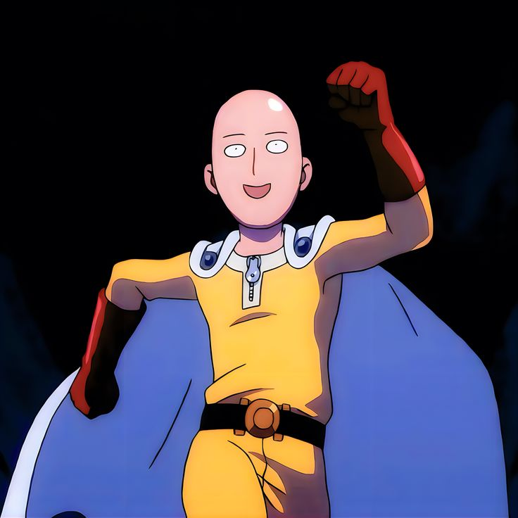

You'll see Saitama rarely under stress, rarely feeling pressure. He could be the most dangerous guy and the kindest guy, the most funny person. He could be really intense, and could be really chill and calm.
It's this complexity that makes him my favorite anime character.
He is like a dude who could beat anybody with a single punch and still feels that this is all too boring for him. He doesn't like the fact that finishing the fight with a single punch could be the most interesting and the most boring thing ever.
He is a common, normal, chill dude. He fights the bad people if needed, he goes out to buy his own groceries, doesn't have any bad intentions—just fights monsters for the greater good.
But he is the most intense guy; he could be the scariest when he is not in his normal aura.
Somehow I feel the same about myself. This intensity is the dark side, the side that's the true me. This intensity is something I haven't shown to many people, but it just comes out when I am truly me—in my zone, alone. I feel like I could do anything; there is nothing that I couldn't do. This is my everything, my drive, my passion, my curiosity, my ambition, my crave for everything.
This is something that Elon has, Kanye has, Travis Kalanick has, and I think you need to have this to drive you. Otherwise, you could get crushed too easily with the pressure that comes, the problems that come, the emotional stuff that makes you go blurry. The same thing that could make you a demon, could make you successful, could make you get anything you want in this world. With this intensity, everything is for you and you are for everything.
But some problems are that this makes you go lonely, this makes you have extremely high ambitions—and I love it. This makes you go crazy sometimes because a lot of things could pile up pretty easily and could be heavy if you don't know how to manage this intensity. It definitely leaks in some ways for sure: in relationships, with family, with friends. Thoughts come crazy that you can't do anything but just manage and not focus too much on this. Sometimes you could spiral like crazy and not want to meet anybody, just be in your own company and enjoy, go hard, learn or read. It's very hard to sit and do nothing with this intensity. It feels like you are wasting yourself, and betraying yourself. It's hard not to be self-critical when you are not going after the things you really truly want to achieve. You want to be on the top, with the people you admire, respect, learn from. You want to work with the best and do the best things. Once you have the resources, you could move things as you want, have the control to make things happen you always wanted to make exist. You could make the right things happen, have a big cover for your family so nobody could hurt them ever, nobody could disrespect them, nobody could even think of hurting them. You never want to ever feel harmless, powerless—and then nobody could bully you, nobody could put you at a disadvantage, nobody could even dare to go physical on you. You want to be the one?
Sure, go ahead, make them happen. At the end, nobody could stop you other than you yourself. Set the standards crippling high so that nobody could ever think of competing with you.
One thing for sure I know about myself: it's either the world or nothing. And it's scary as fuck. I absolutely know myself, and this is my goddamn fucking advantage.
I want to end this with the Nassim Taleb quote: "If you think you are in competition with anybody, for anything, you are a loser."